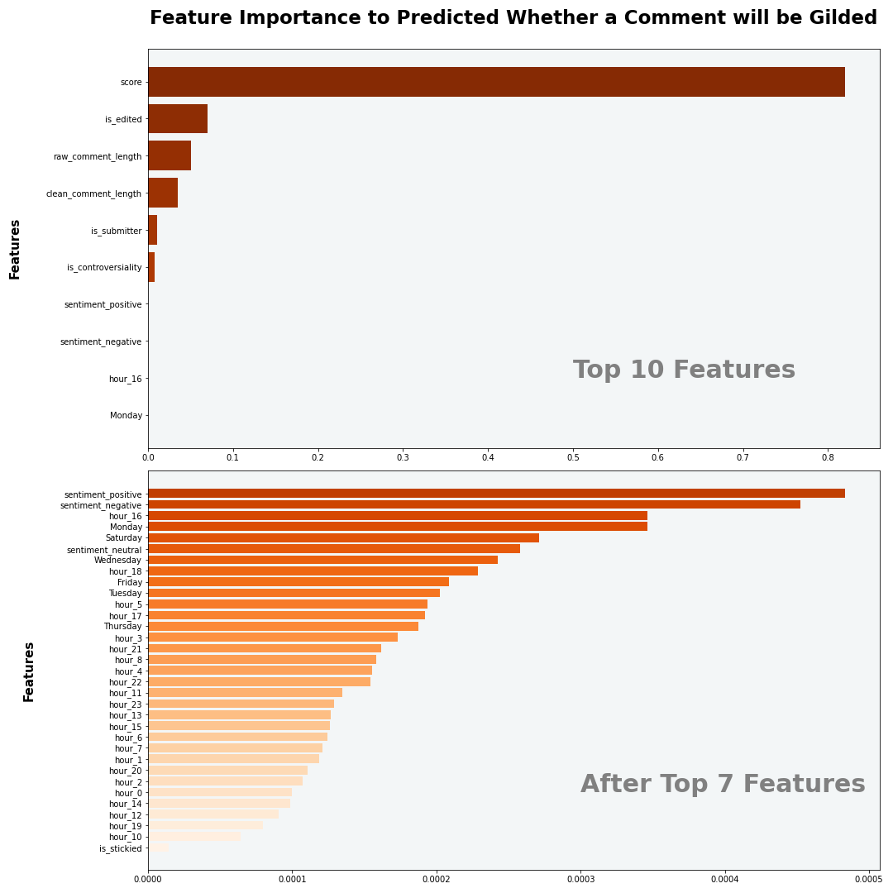
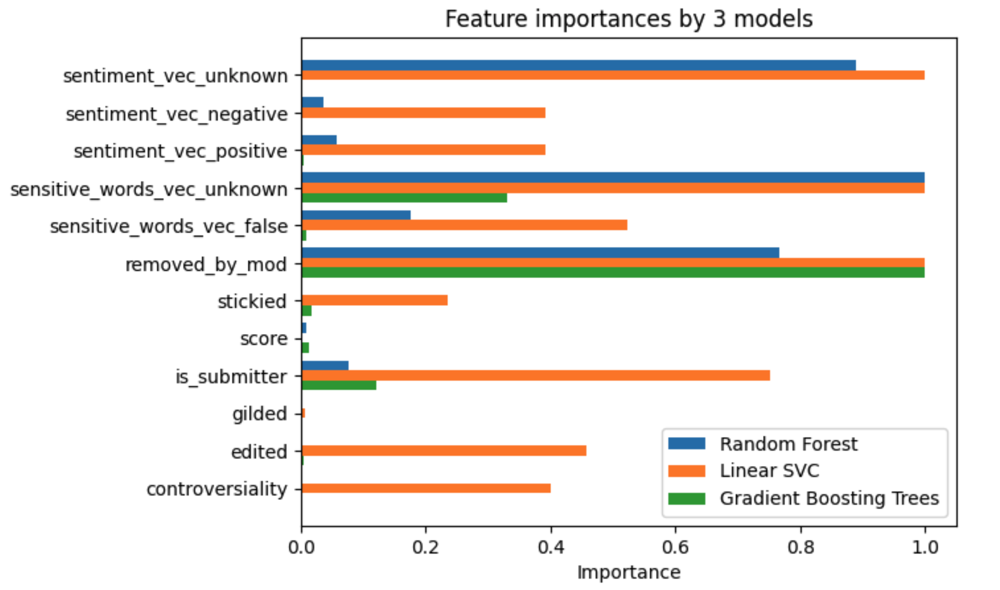
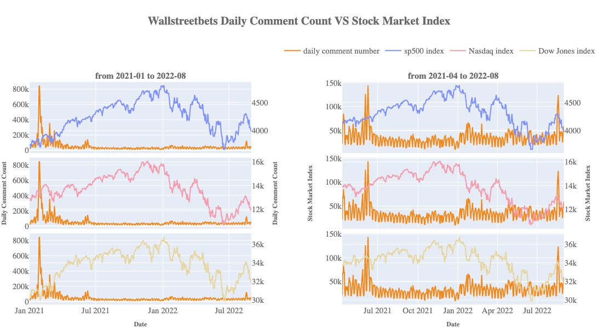

Conclusion
Pages
In conclusion, our project explored the embedded data patterns behind the posts on Reddit and how these data reflected real-world changes. Through the milestones of our project, most of the business goals proposed in the introduction section are solved in the Exploratory Data Analysis(EDA), Natural Language Processing(NLP), and Machine Learning(ML) sections.
The majority of data used in this project was collected from the post in the subreddit “AskReddit”. With the help of machine learning techniques and sentiment models, we were able to address our business goal, which asks what kind of posts are most likely to be gilded and whether data feature “controversiality” has an impact. We applied a series of data processing pipelines to these posts, discovering that posts with a higher “score”(number of thumbs-up minus thumbs-down) were more likely to be gilded. Besides, we also summarized the top 10 features influencing the gilded option in the summary table below, and we recognized that posts with the feature “controversiality” do have a relatively-subtle influence on the gilded option. This discovery could be a useful reference for Reddit users who want to receive more awards from others, as they could develop a set of comment styles that was more appealing to their target group of users, developing high-score answers as the first stage to attract more gilds.

Besides, we also drilled deeply into the business goal, which asks what kind of account is more likely to be canceled. By exploring, transforming, and pipelining these posts, we summarized several potential causes of account cancellation, and the main reason for account cancellation came from the regulation of Reddit moderators. In our observations, post-removals by regulators correlated closely with those who had their accounts deleted. Therefore, Reddit users should pay more attention to the regulation rules when posting their opinions so they can continue participating in Reddit.

Moreover, our project also established a connection between the posts in the “WallStreetBets” SubReddit and the real-world stock market data. By illustrating a clear visualization contrasting stock price indices and the number of posts made in the subreddit, we concluded that people were more likely to share their opinions on Reddit when the stock index had a considerable amount of fluctuation, especially when the stock index increased. Therefore, the posts in this subreddit of individual investors could be regarded as an interesting indicator of the stock market.

Overall, by running through all of those milestones, our project has accomplished a lot in the direction of our initial expectations. While we managed to extract many useful summary statistics and inferences from such a huge dataset of Reddit posts with the help of big data analytic tools, we have also gathered rich experiences designing and developing data analytics programs, practicing the integral pipeline from raw data to practical conclusions and analysis from which both common audience and professionals could benefit.
However, our project still has a bunch of unachieved targets for future investigation. As mentioned in the introduction page of our project, our group was initially interested in exploring the data information in the “AutoNewspaper” SubReddit, but we need to research more rigid NLP tools for topic extraction in order to make convincing inferences, so currently we have decided to leave this field for future exploration. In the future, once the topics of news posts could be extracted smoothly, we will use machine learning techniques to classify the post in the “AutoNewspaper” SubReddit, and use the sentiment model to identify the sentiment in each type of news post, which could then be utilized for further inferences fulfilling our targets of interest in the 6th and 8th business questions. Also, we believe that with the help of such topic extraction techniques, we will be able to make substantial progress for the remaining business goals, as a solid step on the path of Big Data and Cloud Computing.
Appendix
In this section, we set our 10 research avenues we want to explore.